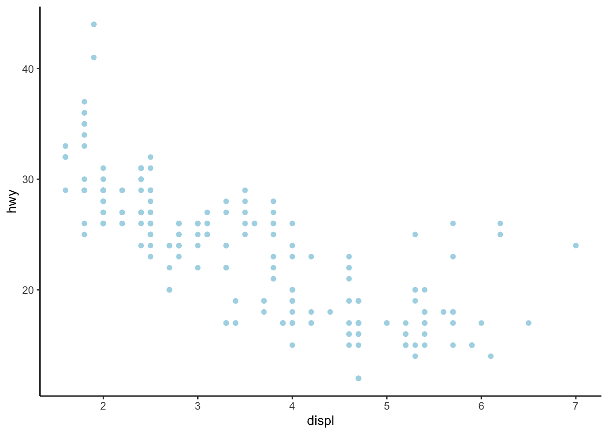

Lesson 1: Intro to plotting data in R with ggplot
Functions for Lesson 1
?, str, glimpse, summary, table, min, ,max, ggplot, geom_point, geom_smooth, theme_minimal, theme_classic, theme_tufte
Packages for Lesson 1
tidyverse, ggplot2, dplyr
Agenda
Data visualisation in R for Data Science, Section 3.1.1.
- Intro to the
Renvironment (IDE)
- Loading packages, e.g.
tidyverse
- Using built-in
Rdata: thempgdataset
- Using ggplot with the built-in data set (to make scatterplots)
- Modifying plot aesthetics
- Reading in outside data: Airbnb data
- Plotting Airbnb data with ggplot
Intro to the R environment (IDE)
The RStudio integrated development environment (IDE) and what you can do with it.

A more complete example of what you can acheive with the interface.

Loading packages, e.g. tidyverse
How to load packages in R.
install.packages("tidyverse") # install package
library(tidyverse) # load the package library
require(tidyverse) # same as library
# We are typing in an R Script. Things with # in front make them comments and notes to ourselves
# Command Return to execute the line/ 'run the code'
Using built-in R data: the mpg dataset
We’ll use a built-in tidyverse dataset called mpg with data about cars and gas-mileage.
mpg
# run help page with '?'
`?`(mpg)- This is a tibble (data frame) that we’ve “printed” out. It’s like R’s version of an excel spreadsheet, but much better.
- A tibble will show us the first 10 rows, rows containing the data, column names, and the class of data within each column, such as numeric, integer, or character.
Summarising data
str(mpg) # structure of data
glimpse(mpg) # preview of data
summary(mpg) # basic summary stats
table(mpg$manufacturer) # counts of each column
head(mpg) # visualise first 6 rows of data
tail(mpg, 10) # visualise last 10 (or N) rows of data
names(mpg) # get column names
class(mpg) # class of data frame
class(mpg$manufacturer) # class of data column
mpg$displ # print a column
mpg$hwy # print a column
Creating a plot with ggplot
ggplot()Creates a coordinate system for us–basically an empty graph.
geom_point()Adds a “layer”, e.g. geom_point (but there are many for different kinds of graphs).
Plot two of the data columns
ggplot(data = mpg) + geom_point(mapping = aes(x = displ, y = hwy))
Changing the data column inputs for the x and y axis of the plot
ggplot(data = mpg) + geom_point(mapping = aes(x = class, y = drv))
Assign data to variables to create dynamic inputs
my_data <- mpg # create own variable using a name of your choice
ggplot(data = my_data) + geom_point(mapping = aes(x = displ, y = hwy))
Themes
Change plot style. Link for more ggplot themes.
require(ggthemes)
# classic theme
ggplot(data = my_data) + geom_point(mapping = aes(x = displ, y = hwy)) + theme_minimal()
# minimal theme
ggplot(data = my_data) + geom_point(mapping = aes(x = displ, y = hwy)) + theme_tufte()
# assign theme to variable
my_theme <- theme_classic()
ggplot(data = my_data) + geom_point(mapping = aes(x = displ, y = hwy)) + my_theme # apply your chosen theme 
Aesthetic mapping
color. Change the color of the data points. size. Change the size of the data points.
alpha. Change the transparency of the data points.
Color
Color by color name.
ggplot(data = my_data) + geom_point(mapping = aes(x = displ, y = hwy), color = "light blue") + my_theme
Color by a hex code in quotes.
ggplot(data = my_data) + geom_point(mapping = aes(x = displ, y = hwy), color = "#BB5C42") + my_theme
Color by data column
ggplot(data = my_data) + geom_point(mapping = aes(x = displ, y = hwy, color = class)) + my_theme
Inside versus outside the aes
ggplot(data = my_data) + geom_point(mapping = aes(x = displ, y = hwy, color = "blue")) + my_theme
Size
Size by integer
ggplot(data = my_data) + geom_point(mapping = aes(x = displ, y = hwy, size = 5)) + my_theme
Size by data column
ggplot(data = my_data) + geom_point(mapping = aes(x = displ, y = hwy, size = class)) + my_theme
We get a warning, but this is okay.
Transparency
# map classe column to different transparencies
ggplot(data = my_data) + geom_point(mapping = aes(x = displ, y = hwy, alpha = class)) + my_theme
Shape
ggplot(data = my_data) + geom_point(mapping = aes(x = displ, y = hwy, shape = class)) + my_theme
Any warnings? Yes, because shape maxes out at six levels.
Manually changing aesthetic properties
But we can set the aesthetic properties manually, instead of having ggplot do the scaling automatically. For example, we can make our ggplot points all blue like this. This time, putting color OUTSIDE the aes argument.
ggplot(data = my_data) + geom_point(mapping = aes(x = displ, y = hwy), color = "blue") + my_theme
Using color both inside and outside the aes
ggplot(data = my_data) + geom_point(mapping = aes(x = displ, y = hwy, color = class), color = "#AE42BB") +
my_theme
The inner one is overridden.
Putting it all together as a snapshot of what’s possible
ggplot(data = my_data) + geom_point(mapping = aes(x = displ, y = hwy, color = class, size = class, alpha = class)) +
my_theme
Aesthetics you can manually set
- The name of a color as a character string.
- The size of a point in mm.
- The shape of a point as a number, as shown in Figure 3.1.

R has 25 built in shapes that are identified by numbers. There are some seeming duplicates: for example, 0, 15, and 22 are all squares. The difference comes from the interaction of the colour and fill aesthetics. The hollow shapes (0–14) have a border determined by colour; the solid shapes (15–18) are filled with colour; the filled shapes (21–24) have a border of colour and are filled with fill.
Further plotting examples
The online reference contains further examples of how to visualise your data.
Reading in outside data: NYC Airbnb data
library(tidyverse) # includes package 'readr'
# All Airbnb data (106 cols)
url <- "http://data.insideairbnb.com/united-states/ny/new-york-city/2019-06-02/data/listings.csv.gz"
nyc_full <- read_csv(url) # reads in data
glimpse(nyc_full)
Using a smaller dataset
# smaller csv file (16 cols)
url <- "http://data.insideairbnb.com/united-states/ny/new-york-city/2019-06-02/visualisations/listings.csv"
nyc <- read_csv(url)
nyc <- nyc[nyc$id < 1e+06, ] # get smaller subet of data
length(nyc$id) # print length of 'id' column[1] 2177glimpse(nyc)Observations: 2,177
Variables: 16
$ id <dbl> 2539, 2595, 3647, 3831, 4989, 5022, 5099, 5121, 5178, 5203…
$ name <chr> "Clean & quiet apt home by the park", "Skylit Midtown Cast…
$ host_id <dbl> 2787, 2845, 4632, 4869, 7118, 7192, 7322, 7356, 8967, 7490…
$ host_name <chr> "John", "Jennifer", "Elisabeth", "LisaRoxanne", "New-Yorke…
$ neighbourhood_group <chr> "Brooklyn", "Manhattan", "Manhattan", "Brooklyn", "Manhatt…
$ neighbourhood <chr> "Kensington", "Midtown", "Harlem", "Clinton Hill", "Hell's…
$ latitude <dbl> 40.64749, 40.75362, 40.80902, 40.68514, 40.76260, 40.79851…
$ longitude <dbl> -73.97237, -73.98377, -73.94190, -73.95976, -73.99304, -73…
$ room_type <chr> "Private room", "Entire home/apt", "Private room", "Entire…
$ price <dbl> 149, 225, 150, 89, 105, 80, 200, 60, 79, 79, 150, 135, 85,…
$ minimum_nights <dbl> 1, 1, 3, 1, 4, 10, 3, 45, 2, 2, 1, 5, 2, 4, 2, 90, 2, 2, 1…
$ number_of_reviews <dbl> 9, 44, 0, 258, 27, 9, 71, 49, 424, 118, 159, 50, 184, 163,…
$ last_review <date> 2018-10-19, 2019-05-07, NA, 2019-05-20, 2018-07-25, 2018-…
$ reviews_per_month <dbl> 0.21, 0.38, NA, 4.53, 0.24, 0.10, 0.58, 0.40, 3.46, 1.00, …
$ calculated_host_listings_count <dbl> 6, 2, 1, 1, 1, 1, 1, 1, 1, 1, 4, 1, 1, 3, 1, 1, 1, 1, 1, 1…
$ availability_365 <dbl> 365, 331, 365, 182, 83, 0, 92, 0, 214, 0, 153, 25, 20, 342…
Plotting AirBnB data with ggplot
Using the above plotting functions to visualise the AirBnB data
# plot neighborhood_group vs price
ggplot(data = nyc) + geom_point(mapping = aes(x = neighbourhood_group, y = price, color = neighbourhood_group),
shape = 21, stroke = 1) + my_theme
# plot minimum_nights vs price
ggplot(data = nyc) + geom_point(mapping = aes(x = minimum_nights, y = price, color = neighbourhood_group),
shape = 20, size = 3, stroke = 1) + my_theme
# availability_365 vs price
ggplot(data = nyc) + geom_point(mapping = aes(x = availability_365, y = price, color = neighbourhood_group),
shape = 21, stroke = 1) + my_theme
# plot longitude vs price
ggplot(data = nyc) + geom_point(mapping = aes(x = longitude, y = price, color = neighbourhood_group),
shape = 21, stroke = 1) + my_theme
Try your own plot using the other variables in the dataset
# plot neighborhood_group vs price
names(airbnb)
glimpse(airbnb)
my_data <- NULL
x <- NULL
y <- NULL
color <- NULL
shape <- NULL
stroke <- NULL